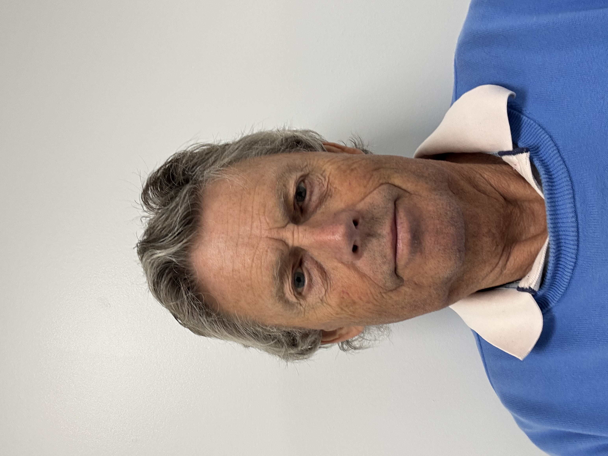
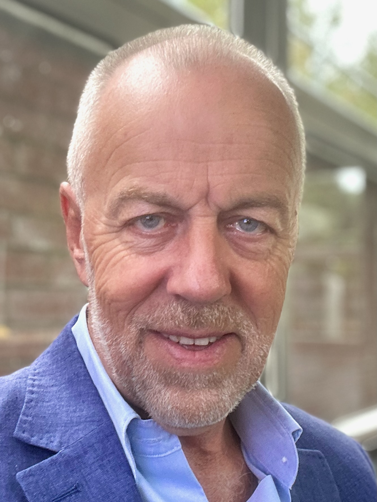
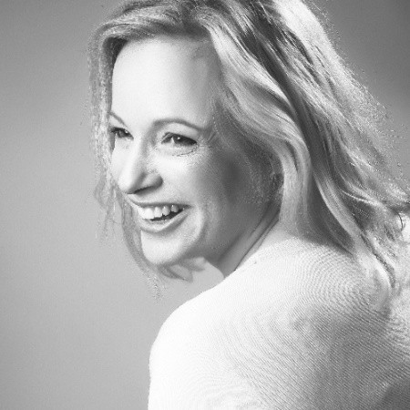
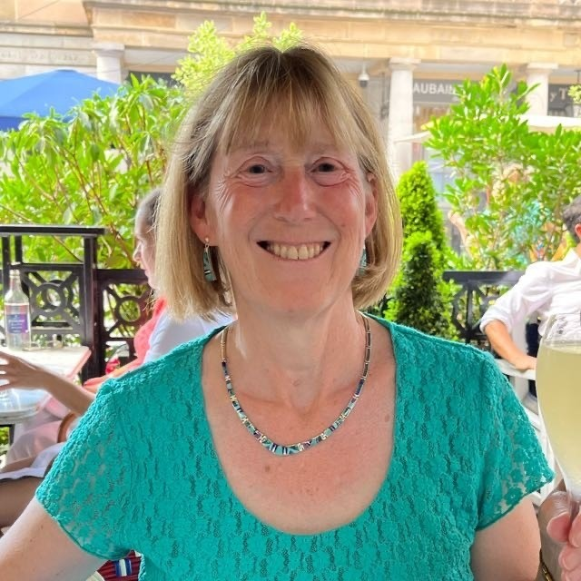

The Management Committee are volunteers who steward the Seven Stars on behalf of all shareholders. To get in touch with any of them, please email info@bncsltd.com.




To contact the committee about shares, the Society, or anything else, please email info@bncsltd.com and we'll point you to the right person.